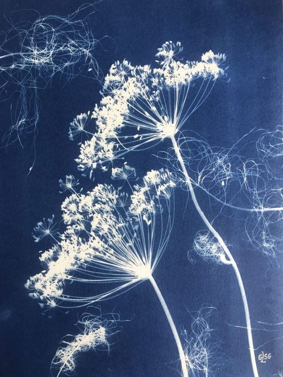
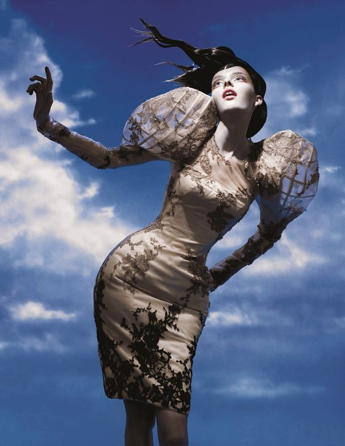
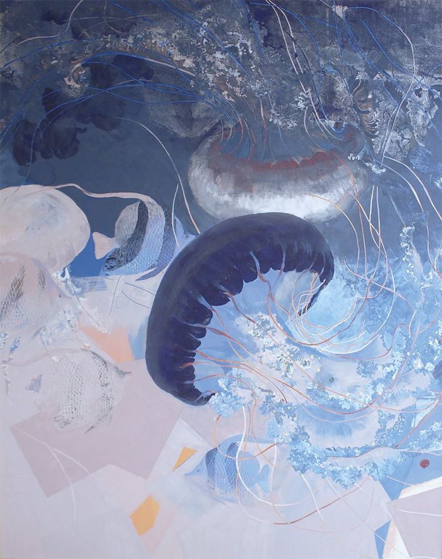
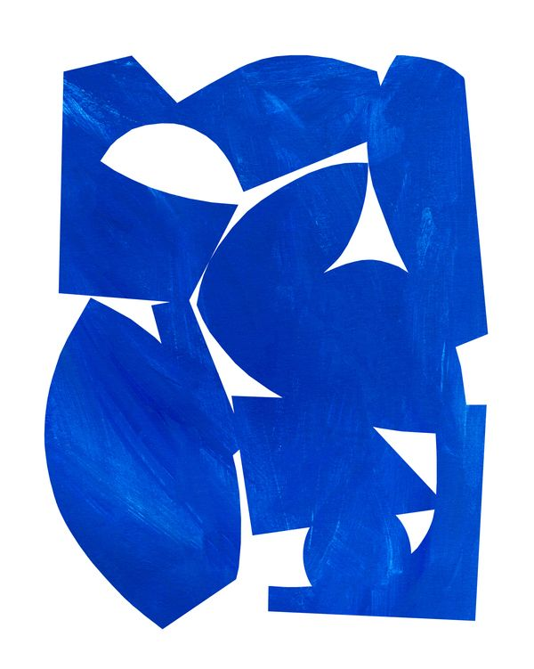
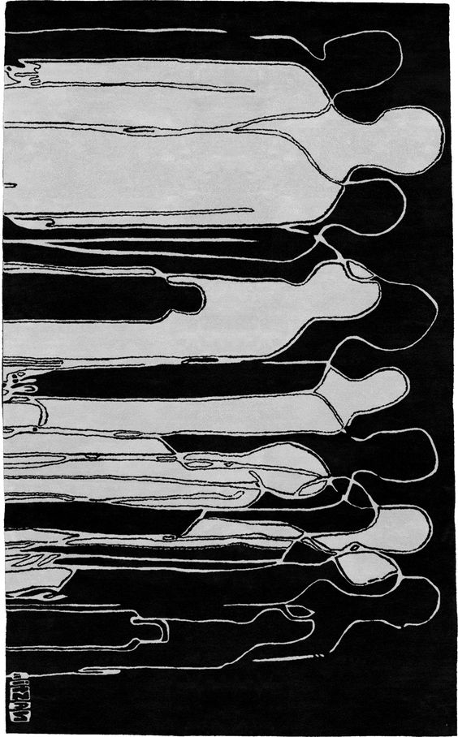

Greek Myth-Inspired Art
A captivating piece of art that depicts five Greek figures in a circular formation, reminiscent of ancient myths and tales. Their intricate postures and expressions invite viewers to explore the depths of mythology.
Floral X-Ray in Blue
A striking image resembling an ethereal x-ray of flowers, enveloped in a cool, blue-toned negative film effect. This visual anomaly invites contemplation on the interplay of nature and technology.
Elegant Pose against the Sky
An elegant model gracefully posed against the backdrop of an expansive sky. The juxtaposition of human beauty and the vast heavens evokes a sense of freedom and serenity.
Japanese Jellyfish Art
An intricate artwork that weaves together the delicate beauty of jellyfish forms, as envisioned by a Japanese artist. The composition captures the mesmerizing movement and translucent elegance of these sea creatures.
Cobalt
Emily Kopcik's Cobalt on Artfully Walls showcases abstract expressionism at its finest. With masterful use of cobalt blue shades, the artwork exudes depth and motion. A must-have for art enthusiasts seeking captivating and emotive pieces.
Black and White Wool Rug
The rug that seamlessly blends modern design with timeless elegance, featuring intricate patterns that add depth to any space. A versatile choice for contemporary or classic interiors, this rug elevates decor with its dynamic interplay of colors and textures.
Jack Davison's emotive photography
Styled by Vanessa Reid, combines raw authenticity with unique perspectives. His work, featured in Vogue and The New York Times, captures the humanity of his subjects through unconventional angles and techniques.
Sky's Enchanted Colors
The Realm of Chinese Digital Art in Modern Times conveys the idea of vibrant and captivating digital art inspired by Chinese culture and aesthetics in the context of the contemporary world.